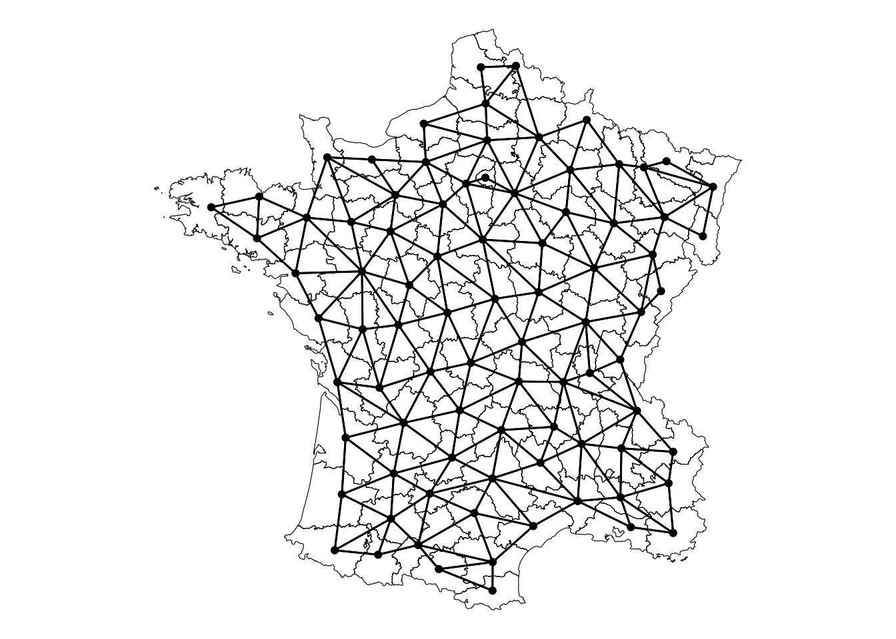

library(sfdep)
library(dplyr)
geoms <- guerry$geometry
centroids <- sf::st_centroid(geoms)
nb <- st_contiguity(geoms)
wt <- st_kernel_weights(nb, centroids, "gaussian")Encoding spatial patterns as variables
Principal Coordinate Analysis & Moran Eigenvectors
spatial
r
I’ve begun reading “Spatial modelling: a comprehensive framework for principal coordinate analysis of neighbour matrices (PCNM)” which describes the process of making “Moran Eigenvector Maps.”
In this case, I haven’t finished reading the paper but am quite thrilled by the prospect of it. One of the biggest problems in ecological and social science modelling is that space is often a confounder in models. By this I mean that a lot of phenomena we see are spatially dependent.
Reductively, spatial dependence means that variables or outcomes are strongly linked to where things are. For example, income tends to be spatially dependent. Meaning that high income areas are typically surounded by other high income areas.
The problem
When modelling data that exhibit spatial dependence, spatial relationships need to be accounted for. Otherwise, you will often find that model residuals (errors) also exhibit spatial dependence. So? How can you control for this.
There are a number of techniques that people use from more statistically sound ones, to tricks used by ML engineers. For example you may introduce the spatial lag (neighborhood average of a variable) to account for some of the spatial association.
Principal Coordinate Analysis (PCoA)
One interesting idea is using principle components analysis to encode geography into numeric variables. Conceptually, the idea is actually rather simple!
When we do spatial statistics, we create what are called spatial weights matrices. These define which features are related to eachother.
For example we can identify the neighbors from the famous guerry dataset based on the contiguity—that is if they are touching. We create a nb and wt object. The nb are the neighbors and wt uses a gaussian kernel. The gaussian kernel assigns more weight to to locations that are closer and less weight to those that are further—essentially following the normal distribution.
Visually, this is what the neighborhood relationship looks like:
Code
library(ggplot2)
sfn <- st_as_graph(geoms, nb, )
autoplot(sfn) +
geom_sf(data = geoms, fill = NA, color = "black", lwd = 0.2) +
theme_void()
The weights object is a ragged array which is used to be a sparse matrix representation of the spatial weights.
head(wt)[[1]]
[1] 1.553402 1.857660 2.062100 1.676694
[[2]]
[1] 1.801787 1.717777 1.439955 1.721547 1.260566 1.429496
[[3]]
[1] 1.599532 1.527097 1.376795 1.722723 1.865664 1.350771
[[4]]
[1] 2.040754 1.356645 1.871658 1.685343
[[5]]
[1] 2.040754 1.674375 1.689488
[[6]]
[1] 2.075805 1.679763 1.357435 1.308397 2.009760 1.812262 1.432539The spatial weights are an n x n square matrix. The idea behind the paper above is that we can encode the spatial relationships in this neighborhood matrix using principle components.
We can take the weights matrix and create a dense matrix from it:
m <- wt_as_matrix(nb, wt)Using this new matrix, we can perform PCA on it.
Importance of components:
PC1 PC2 PC3 PC4 PC5 PC6 PC7
Standard deviation 0.95957 0.89585 0.85836 0.81484 0.79239 0.72065 0.66135
Proportion of Variance 0.06928 0.06038 0.05543 0.04996 0.04724 0.03907 0.03291
Cumulative Proportion 0.06928 0.12966 0.18510 0.23505 0.28229 0.32137 0.35428
PC8 PC9 PC10 PC11 PC12 PC13 PC14
Standard deviation 0.65347 0.60391 0.58993 0.54551 0.51607 0.51048 0.50266
Proportion of Variance 0.03213 0.02744 0.02618 0.02239 0.02004 0.01961 0.01901
Cumulative Proportion 0.38640 0.41385 0.44003 0.46242 0.48246 0.50206 0.52107
PC15 PC16 PC17 PC18 PC19 PC20 PC21
Standard deviation 0.50008 0.49651 0.48004 0.47334 0.46571 0.46447 0.45886
Proportion of Variance 0.01882 0.01855 0.01734 0.01686 0.01632 0.01623 0.01584
Cumulative Proportion 0.53989 0.55844 0.57578 0.59263 0.60895 0.62518 0.64103
PC22 PC23 PC24 PC25 PC26 PC27 PC28
Standard deviation 0.45371 0.4495 0.43495 0.43208 0.42533 0.42265 0.40912
Proportion of Variance 0.01549 0.0152 0.01423 0.01405 0.01361 0.01344 0.01259
Cumulative Proportion 0.65651 0.6717 0.68595 0.70000 0.71361 0.72705 0.73964
PC29 PC30 PC31 PC32 PC33 PC34 PC35
Standard deviation 0.40662 0.40248 0.39657 0.38949 0.38172 0.37648 0.36612
Proportion of Variance 0.01244 0.01219 0.01183 0.01141 0.01096 0.01066 0.01009
Cumulative Proportion 0.75208 0.76427 0.77610 0.78752 0.79848 0.80915 0.81923
PC36 PC37 PC38 PC39 PC40 PC41 PC42
Standard deviation 0.35885 0.35324 0.35042 0.34655 0.33906 0.33458 0.32477
Proportion of Variance 0.00969 0.00939 0.00924 0.00904 0.00865 0.00842 0.00794
Cumulative Proportion 0.82892 0.83831 0.84755 0.85658 0.86523 0.87366 0.88159
PC43 PC44 PC45 PC46 PC47 PC48 PC49
Standard deviation 0.32182 0.30859 0.30426 0.30100 0.29700 0.28072 0.27493
Proportion of Variance 0.00779 0.00716 0.00697 0.00682 0.00664 0.00593 0.00569
Cumulative Proportion 0.88938 0.89655 0.90351 0.91033 0.91697 0.92290 0.92858
PC50 PC51 PC52 PC53 PC54 PC55 PC56
Standard deviation 0.26620 0.25927 0.25817 0.25373 0.25203 0.23148 0.22505
Proportion of Variance 0.00533 0.00506 0.00501 0.00484 0.00478 0.00403 0.00381
Cumulative Proportion 0.93391 0.93897 0.94399 0.94883 0.95361 0.95764 0.96145
PC57 PC58 PC59 PC60 PC61 PC62 PC63
Standard deviation 0.21925 0.2124 0.20738 0.20542 0.20426 0.17969 0.17415
Proportion of Variance 0.00362 0.0034 0.00324 0.00318 0.00314 0.00243 0.00228
Cumulative Proportion 0.96507 0.9685 0.97170 0.97488 0.97801 0.98044 0.98273
PC64 PC65 PC66 PC67 PC68 PC69 PC70
Standard deviation 0.17330 0.16078 0.15374 0.14641 0.14201 0.13335 0.13088
Proportion of Variance 0.00226 0.00194 0.00178 0.00161 0.00152 0.00134 0.00129
Cumulative Proportion 0.98499 0.98693 0.98871 0.99032 0.99184 0.99318 0.99447
PC71 PC72 PC73 PC74 PC75 PC76 PC77
Standard deviation 0.12526 0.10810 0.10181 0.08943 0.08425 0.07410 0.07172
Proportion of Variance 0.00118 0.00088 0.00078 0.00060 0.00053 0.00041 0.00039
Cumulative Proportion 0.99565 0.99653 0.99731 0.99791 0.99844 0.99885 0.99924
PC78 PC79 PC80 PC81 PC82 PC83 PC84
Standard deviation 0.06809 0.04608 0.03760 0.03481 0.02250 0.01105 0.008143
Proportion of Variance 0.00035 0.00016 0.00011 0.00009 0.00004 0.00001 0.000000
Cumulative Proportion 0.99959 0.99975 0.99986 0.99995 0.99999 1.00000 1.000000
PC85
Standard deviation 3.921e-16
Proportion of Variance 0.000e+00
Cumulative Proportion 1.000e+00The spatial relationships that are embedded by the spatial weights matrix, are now encoded as components from a PCA. This means that we can use each of these components as a univariate measure of space. And, they also exhibit quite interesting patterns of spatial dependence.
Exploring PCoA
These components essentially capture spatial autocorrelation. For example we an look at the first component.
# extract the first component
comp1 <- pca_res$rotation[, 1]
ggplot(guerry, aes(fill = comp1)) +
geom_sf(color = "black", lwd = 0.2) +
scale_fill_viridis_c() +
theme_void() +
labs(fill = "Eigenvector")It displays a pattern of being near Paris (the dark purple, or negative eigenvector values) or being nearer to Aveyron, the positive eigenvector values. Clearly, this displays some interesting global spatial autocorrelation. But how much?
We can measure the global spatial autocorrelation of this component using Moran’s I.
global_moran_perm(comp1, nb, wt)
Monte-Carlo simulation of Moran I
data: x
weights: listw
number of simulations + 1: 500
statistic = 1.0698, observed rank = 500, p-value < 2.2e-16
alternative hypothesis: two.sidedThe result is 1.0698 which is greater than the theoretical maximum of 1. There is a ridiculous amount of spatial autocorrelation here.
Using PCoA Eigenvectors to reduce spatial confounding
Predicting crime based on population and the prostitution levels of 1830s France shows that there is a lot of spatial autocorrelation in the residuals. This means that the results of the model do not appropriately account for spatial dependence.
Call:
lm(formula = crime_pers ~ pop1831 + prostitutes, data = guerry)
Residuals:
Min 1Q Median 3Q Max
-13762.2 -4592.1 -974.6 4892.4 18672.5
Coefficients:
Estimate Std. Error t value Pr(>|t|)
(Intercept) 13688.932 2265.393 6.043 4.27e-08 ***
pop1831 17.676 5.881 3.006 0.00352 **
prostitutes -3.197 1.665 -1.920 0.05833 .
---
Signif. codes: 0 '***' 0.001 '**' 0.01 '*' 0.05 '.' 0.1 ' ' 1
Residual standard error: 7001 on 82 degrees of freedom
Multiple R-squared: 0.1021, Adjusted R-squared: 0.08016
F-statistic: 4.66 on 2 and 82 DF, p-value: 0.01211global_moran_test(resid(mod), nb, wt)
Moran I test under randomisation
data: x
weights: listw
Moran I statistic standard deviate = 5.0424, p-value = 2.298e-07
alternative hypothesis: greater
sample estimates:
Moran I statistic Expectation Variance
0.328493924 -0.011904762 0.004557168 If you include the first eigenvector component, the spatial autocorrelation of the residuals decrease dramatically.
Call:
lm(formula = crime_pers ~ pop1831 + prostitutes + comp1, data = guerry)
Residuals:
Min 1Q Median 3Q Max
-14228.8 -3822.7 -893.4 4232.5 19718.8
Coefficients:
Estimate Std. Error t value Pr(>|t|)
(Intercept) 14847.292 2080.269 7.137 3.66e-10 ***
pop1831 15.179 5.386 2.818 0.00607 **
prostitutes -4.597 1.551 -2.964 0.00399 **
comp1 -28422.828 6708.123 -4.237 5.95e-05 ***
---
Signif. codes: 0 '***' 0.001 '**' 0.01 '*' 0.05 '.' 0.1 ' ' 1
Residual standard error: 6373 on 81 degrees of freedom
Multiple R-squared: 0.265, Adjusted R-squared: 0.2378
F-statistic: 9.733 on 3 and 81 DF, p-value: 1.482e-05global_moran_test(resid(mod), nb, wt)
Moran I test under randomisation
data: x
weights: listw
Moran I statistic standard deviate = 2.666, p-value = 0.003838
alternative hypothesis: greater
sample estimates:
Moran I statistic Expectation Variance
0.167439656 -0.011904762 0.004525529 Interestingly, this increases the \(R^2\) by 16 which is nothing to scoff at. The significance of prostitutes variable increases and the \(\beta\) values shrink. And the first component accounts for pretty much everything else lol!
What about another component?
We can plot the relationship that is capture by the second component.
# extract the second component
comp2 <- pca_res$rotation[, 2]
ggplot(guerry, aes(fill = comp2)) +
geom_sf(color = "black", lwd = 0.2) +
scale_fill_viridis_c() +
theme_void() +
labs(fill = "Eigenvector")This component captures a west to east relationship rather than a north to south one. Is the second component spatially autocorrelated?
global_moran_perm(comp2, nb, wt)
Monte-Carlo simulation of Moran I
data: x
weights: listw
number of simulations + 1: 500
statistic = 0.99864, observed rank = 500, p-value < 2.2e-16
alternative hypothesis: two.sidedOh hell yeah it is.
If this component is included in the model instead of the first one we see something interesting.
Call:
lm(formula = crime_pers ~ pop1831 + prostitutes + comp2, data = guerry)
Residuals:
Min 1Q Median 3Q Max
-13617 -4584 -1150 4831 18360
Coefficients:
Estimate Std. Error t value Pr(>|t|)
(Intercept) 13730.388 2278.027 6.027 4.71e-08 ***
pop1831 17.518 5.919 2.960 0.00404 **
prostitutes -3.098 1.686 -1.837 0.06989 .
comp2 3303.053 7091.459 0.466 0.64262
---
Signif. codes: 0 '***' 0.001 '**' 0.01 '*' 0.05 '.' 0.1 ' ' 1
Residual standard error: 7034 on 81 degrees of freedom
Multiple R-squared: 0.1045, Adjusted R-squared: 0.0713
F-statistic: 3.15 on 3 and 81 DF, p-value: 0.02941global_moran_test(resid(mod), nb, wt)
Moran I test under randomisation
data: x
weights: listw
Moran I statistic standard deviate = 5.0189, p-value = 2.598e-07
alternative hypothesis: greater
sample estimates:
Moran I statistic Expectation Variance
0.326953780 -0.011904762 0.004558477 The model is not impacted nor is the spatial autocorrelation. So the pattern encompassed by the second component is not confounding our variables like the first one is.
What does this mean?
If you have spatially dependent features that you’re predicting you should consider using these as input features to your models. I have a hunch that they would work insanely well with computer vision tasks and things models like Random Forests and XGBoost.